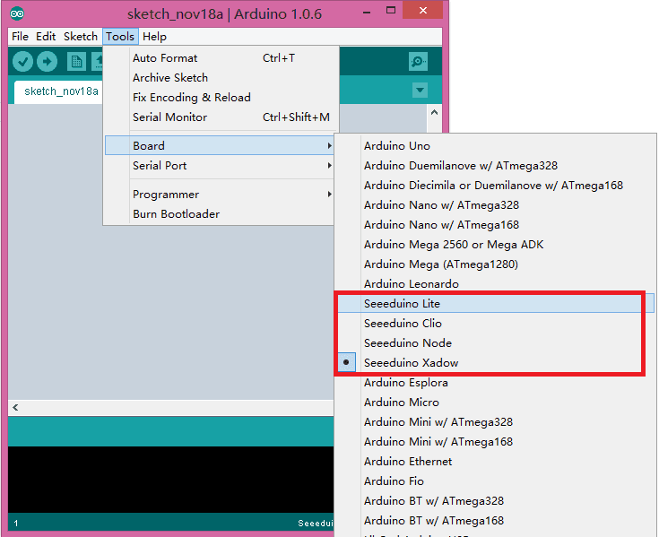

Seeed have 4 main boards that base on Arduino Leonardo, but there's something different.
They are:
To support those board in Arduino IDE, there's a few steps need to be follow.
If you are using a Mac, please refer to here.
First you can download the files here
You will find there're two files:
Then open your Arduino IDE(only support Arduino 1.0.x)folder,
1. Open the path: \arduino-1.0.5\hardware\arduino, you can find a boards.txt, replace it with the one you had download just now
2. Open the path: \arduino-1.0.5\hardware\arduino\cores\arduino, you can find a USBCore.cpp, replace it just like boards.txt
Note: If you are using an other version of Arduino IDE that is not 1.0.5, then may be the path has a little different.
It's ok now, reopen your Arduino IDE, you can see:

Copyright (c) 2008-2016 Seeed Development Limited (www.seeedstudio.com / www.seeed.cc)